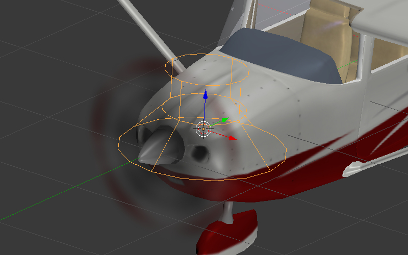
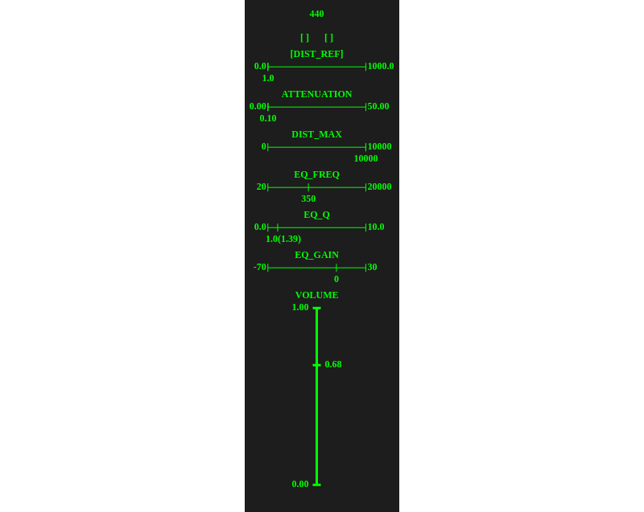

音频¶
在Blender中创建音频源。使用标准的扬声器物体。
{kind=link}
音源设置¶
扬声器参数可以在 属性 面板的 物体数据 选项卡下设置。
{kind=link}
引擎支持标准的所有Blender声音参数和一些引擎特定设置。
声音选项卡¶
静音
启用此参数静音扬声器。
扬声器行为:
音频源的行为。
Positional—高品质的声音空间定位和方向性（锥度）。通过Web Audio API用于声音渲染。这种声音的播放性能是最少，因此只将其用于短采样。这是默认值。
Background Sound— 高质量全方位声音没有空间定位。用Web 音频 API 进行声音渲染。它是更好的性能，但对音乐不是有效。
Background Music— 用来播放音乐。最大的性能，因为使用的音频 HTML 标记，但具有最低限度的灵活性。
下列可用选项在 Sound 面板上 ︰
音量
扬声器音量
随机音量
添加随机音量。所得到的值延迟播放。
音速
声音播放速度。
随机音速
声音播放速度的附加随机化。所得到的值被延迟计算。
淡入
淡入的时间间隔。
淡出
淡出的时间间隔。
启用多普勒
打开后，源移动会产生频移现象。
自动-播放
该选项启用默认播放。
循环播放
循环的声音播放功能。
循环
循环的声音播放功能。与
Cyclic play选项相反，它保证零延迟后重复。选项仅可用于声源的Positional或Background Sound的行为。
循环启动
标记将循环源片段的起点。这个值是在从源文件的开始以秒计数测定。
循环结束
标志着源片段的结束点。该值也是以秒为单位。
延迟
声音播放开始前的延迟。
随机延迟
额外的延迟随机化。根据公式计算所得的值 \(Delay_{result} = Delay + Delay_{random} * Random_{[0-1]}\).
调音台¶
参考 现场查看器此功能可以在发现。

使它显示包含当前场景中的扬声器的各种参数均衡器接口。
{kind=link}
可用于混音的参数包括：
- DIST_REF
这个值设置一个特定扬声器的基准距离。仅适用于``阵地Sound``型扬声器。
- ATTENUATION
此值设置为所选的扬声器发出的声音的衰减因子。可只为 ‘位置声音’ 键入扬声器。
- DIST_MAX
这个值示出了用于一个特定扬声器的最大距离。如果从相机到扬声器的距离比这个数目大的扬声器不会发出任何声音。仅适用于
Positional Sound型扬声器。- EQ_FREQ
当施加升压的中心频率。
- EQ_Q
品质因数 Q。此值控制的频带宽度，下午两点会提振。增加此参数的值，减少宽度。
- EQ_GAIN
此值控制，将被应用到由扬声器发出的声音的提升（以dB为单位测量）。
- VOLUME
由扬声器发出的声音的音量。
下面这个列表，一个参数均衡器的频率特性被示出。
可以使用数字键盘控制混音器。
键
8，4，6和2行为像箭头键和用于不同的扬声器和它们的参数之间的切换。键
+和-增减一个所选参数的值。该
7键可用于静音选定的扬声器。该
9键可以用来制作选定的扬声器梭罗（仅此扬声器会发出声音）。
处理和解码¶
支持的格式 （容器） ︰¶
ogg Vorbis 编码解码器 （Chrome、 火狐浏览器）
mp3 （Chrome，Safari）
mp4、 AAC 编码解码器 （Chrome，Safari）
这推荐使用 Ogg ，它是一个开放式标准，在浏览器常见并提供好音质。在质量和兼容性方面的最佳格式是 48 kHz/16 位。单声道声音 （单声道） 用于存储拍摄的样本，而双声道音响（立体声）用于音乐播放。
不同格式之间的资源转换的描述在 相应章节.